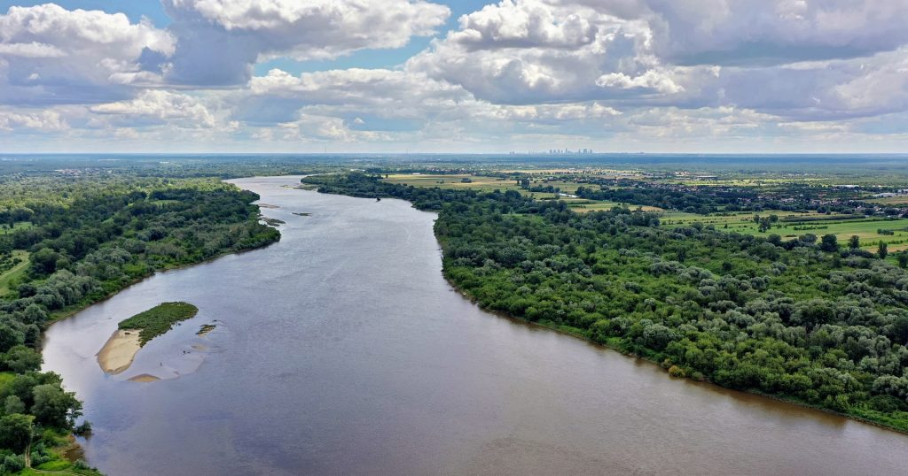

Wisła
Wisła (łac. Vistula) – najdłuższa rzeka Polski, a także najdłuższa rzeka uchodząca do Morza Bałtyckiego, o długości 1047 km. Wpływa do Zatoki Gdańskiej, a jej średnioroczny przepływ w odcinku ujściowym wynosi 1046 m³/s[1]. Według pomiarów z 2005 roku Wisła, stanowiąca najdłuższą rzekę w Polsce, ma długość 1023,5 km[2].
Hydronim „Wisła” ma ponad 2000 lat. Pierwsza wzmianka spisana po łacinie pochodzi z 7–5 r. p.n.e. i znajduje się na wystawionej w Porticus Vipsania mapie Marka Agrypy oraz w Historii naturalnej Pliniusza Starszego, który nazwał rzekę Viscla. Od V wieku Vistla (Divisio orbis terrarum). W okresie tym dorzecze Wisły zasiedlone było od południa przez plemiona celtyckie, a od północy przez plemiona wschodniogermańskie. W wiekach od II do IV występuje nazwa Viscla (Gajusz Juliusz Solinus, Pliniusz Starszy, Klaudiusz Ptolemeusz). Ptolemeusz podał także nazwy i siedziby plemion nad Wisłą: Wenedów, Gythonów, Galindów. Wisła u rzymskich historyków uchodziła do Morza Swebów (łac. Mare Suebicum, Tacyt I wiek), czyli Bałtyku, a ściślej Zatoki Wenedzkiej (II wiek), czyli obecnej Zatoki Gdańskiej – de internis eius partibus Alba, Guthalus, Viscla amnes latissimi praecipitant in oceanum. W germańskiej tradycji pisanej (Widsidh) nadwiślańskie lasy są ojczyzną Wandalów, Sasów i innych plemion germańskich, chociaż w rzeczywistości ludy te pochodzą z południowej Skandynawii[3]. Wincenty Kadłubek nazywał Wisłę Vandalus, wyprowadzając nazwę rzeki od imienia Wandy, a tę od wyrazu vanduo, oznaczającą w języku litewskim wodę, podobnie jak Ouiádou (=woda, rzeka) Ptolemeusza (rzeka Odra). Natomiast Jan Długosz w Annales seu cronicae incliti... nazywa Wisłę „rzeką Białą”: a nationibus orientalibus Polonis vicinis, ab aquae condorem Alba aqua... nominatur. Najdawniejszą formę można próbować odtwarzać jako *Wīstlā, czy wykazać związek z pierwiastkiem *weys „płynąć”, lecz z braku nawiązań w toponimii i braku morfemu *Wīstl- w historycznych językach, można przyjąć, że jest to nazwa przejęta przez ludy indoeuropejskie od wcześniejszych mieszkańców[4].
